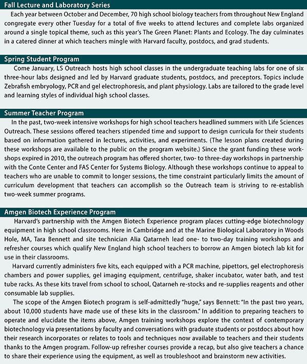

News Archives : 2014 : "Crossfertilization": Life Sciences Outreach Helps High School Teachers Help Us
by Sophie Blum
December 19, 2014
It’s never too soon to start training and recruiting future innovators in the sciences. MCB Professor Robert A. Lue initiated Harvard’s Life Sciences Outreach Program in an effort to galvanize interest in research science among youth by giving high school students access to the most exciting and up-to-date scientific discoveries.
Shortly after securing the HHMI grant that put LS Outreach on the map in 2002, Lue hired former high school biology teachers Tara Bennett and Susan Johnson to manage the program and lend their experience, enthusiasm, and creativity to its development. Today, Bennett and Johnson serve as communication liaisons between research scientists and educators by updating high school teachers with contemporary science content, teaming up to create engaging science curricula, furnishing classrooms with state-of-the-art lab equipment, and inviting high school students into Harvard laboratories to carry out experiments of their own. Reciprocally, the faculty, postdocs, and grad students whom Bennett and Johnson tirelessly recruit as instructors, volunteers, lecturers, data sources, and dinner guests, benefit from the experience and input of teachers and teens who help find ways to articulate advanced research to a wide and diverse audience.
Each Life Sciences Outreach program demonstrates a fundamental commitment to enriching teachers’ experiences, pioneering advances in education, and promoting awareness of contemporary science. This core philosophy owes much to Bennett and Johnson’s experience as high school teachers themselves.
“When I was teaching,” says Bennett, “I realized I wasn’t happy with a lot of the professional development that I had to endure.” “It’s patronizing,” Johnson agrees. When they teamed up, they pledged to develop a program that would “treat teachers like professionals” and “create a culture where we valued their input.” “We don’t ever want to be the people who are telling teachers how to teach in their classrooms,” Johnson avers. Life Sciences Outreach professional development programs emphasize curriculum development and collaboration. As Johnson observes, “there are so many institutions that develop good curriculum but not many that actually have used any input from teachers.” The Life Sciences Outreach approach gives teachers content, via labs, lectures, etc. and then asks them to decide the best way to teach it to their students. Discussion among teachers is fundamental to curriculum development. “Teachers tend to be very isolated,” says Johnson. “You get so overwhelmed with the day to day, you never have time to collaborate with your peers,” adds Bennett. For this reason, communal dinners during the Fall Teacher Program are often as productive as the day’s other activities. “They share so many ideas at the dinners,” Bennett laughs, “sometimes we literally have to pull them away from the tables at the end because they’re still talking.”
Teachers who attend the fall symposium come from a wide variety of backgrounds, from first- or second-year newbies to passionate retirees who occasionally substitute. Some teachers haven’t missed a year since the program’s inception in 2002. “There’s an institutional knowledge that comes with someone who has taught for 30-35 years that is so valuable,” says Bennett. “When I started teaching,” Johnson reflects, “the veterans around me, who’d been there for 20 years, they saved me.” Community is indispensable to old-timers and rookies alike, and this “crossfertilization” across diverse levels of experience is the program’s raison d’être.
While the graduate students and postdocs who attend Outreach events, whether chatting at dinners in the fall or teaching high school courses in the spring, contribute their knowledge and experience as scientists, they have as much to gain from teachers and students as they have to offer. Outreach programs facilitate “opportunities for grad students to fulfill a broader impact,” by giving them tools to communicate their research in an educational setting and fostering connections between scientists and educators. To promote collaboration among the latter, LS Outreach administers Grad Wagon, a website founded by OEB postdoc Andrew Mountcastle, where secondary and middle school teachers can “shop” for lab-tours, presentations, demonstrations, or other “educational enrichment services,” offered gratis by Harvard graduate students and postdocs.
Meanwhile, the diverse groups who attend Spring Student Laboratories, including students with learning and developmental disorders, expose graduate students to a wide spectrum of learning styles, which “is a great way for them to think about how to communicate their work to audiences that don’t have the background or the vocabulary.” After all, high school seniors who attend Spring laboratories, might very well matriculate into Life Sciences 1a at Harvard come fall.
Coincidentally, Bennett and Johnson share offices with the LS 1a preceptors on the first floor of the Harvard Biolabs. As Bennett and Johnson eavesdrop on the “constant stream of freshman who come in for help from the preceptors,” the pair “can’t help but…roll over there” on mobile desk chairs, to interrogate students, pick preceptors’ brains, or share educational insights. Monitoring the academic tribulations of college freshmen is one way Bennett and Johnson keep abreast of trends and developments in high school education in order to better serve students and their teachers.
As teaching and curriculum manager of the Harvard-Allston Education Portal, where Harvard undergraduates mentor 1st-12th grade students in an afterschool setting, Susan Johnson keeps an eye out for patterns in early and secondary education that future LS Outreach programs might address. This feedback loop between Outreach programs, between Johnson and Bennett, and between grade-schoolers and Harvard students, continues to inspire new programming.
Last winter, the Outreach program developed a pilot project with high school teachers to create online activities that allow students to grapple with authentic laboratory data. The LS Outreach program recently submitted a grant proposal to extend this pilot program into a summer workshop for high school teachers that would tackle tablet technology and flipped-classroom and inquiry-based models, each of which plays an increasingly important role in modern classrooms. Johnson indicates an increasing demand among students for EdTech media, such as iPads, which she has successfully (and popularly) “deployed” among some of her undergraduate mentors at the Ed Portal.
Consequently, the Outreach program is very interested in developing ways for teachers to work with high school students, grad students, and postdocs to develop online classroom modules that incorporate new media in which adolescents engage with scientists as well as activities that emphasize data analysis. “I think that’s going to be a big part of what we’re doing for the next couple of years,” Bennett predicts, “trying to figure out how to get data sets from research laboratories into the hands of students and then allowing students to do the analysis and make decisions about how they’re going to approach it.”
Although Bennett and Johnson are excited about these promising new directions, they remain focused on the bottom line: “Getting teachers back on campus.” Teachers’ input is vital to the national discussion about education and curriculum development and crucial to helping LS Outreach and Harvard faculty disseminate their research. As Bennett suggests, “there’s so much happening here in MCB and around the University, [but] teachers don’t have time to learn about it,” and without programs like LS Outreach, “there’s not really another venue for them to learn about it.” Moreover, “for their students to learn about it, it needs to be distilled into a form that they’re going to get excited about.” Ultimately, “Teachers know their students best. They’re the ones who can help us do that.”
The Programs:
